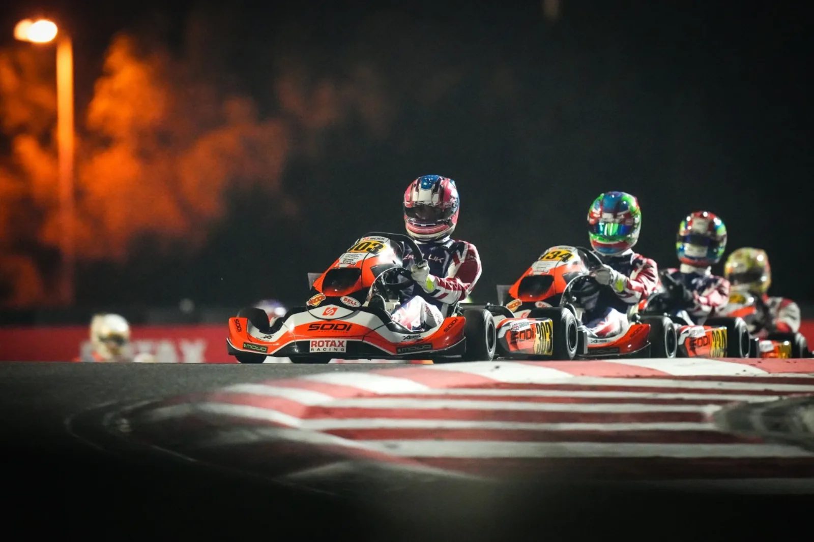
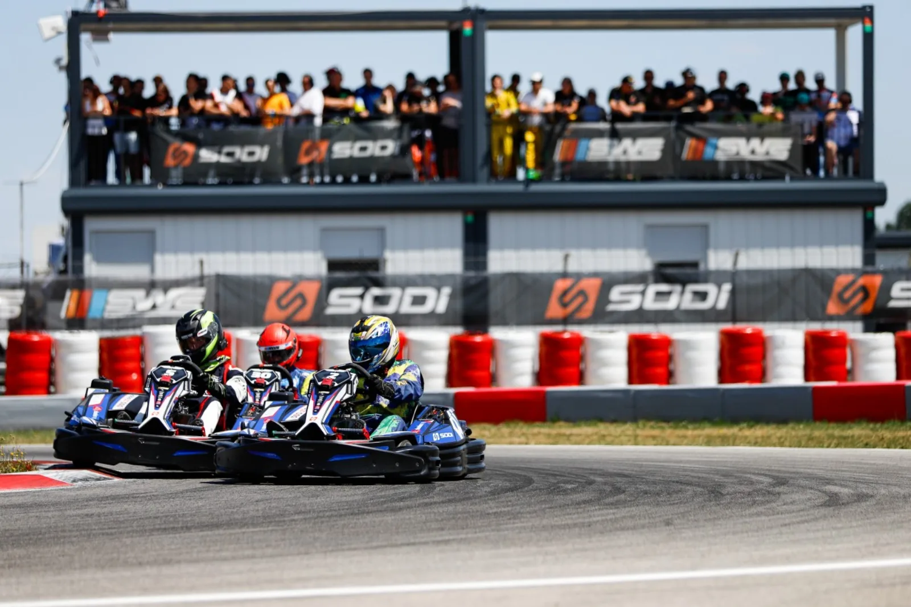
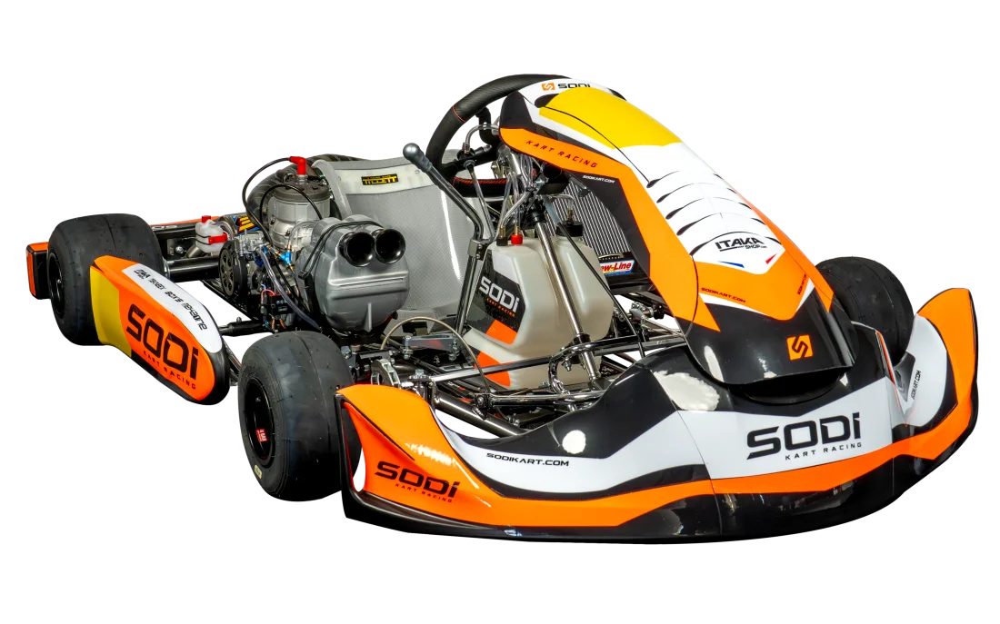
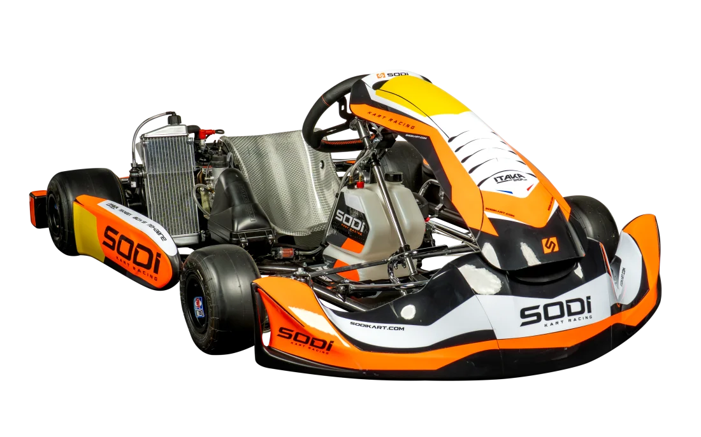
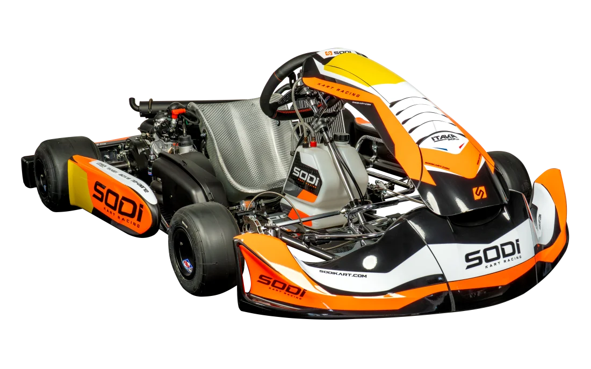
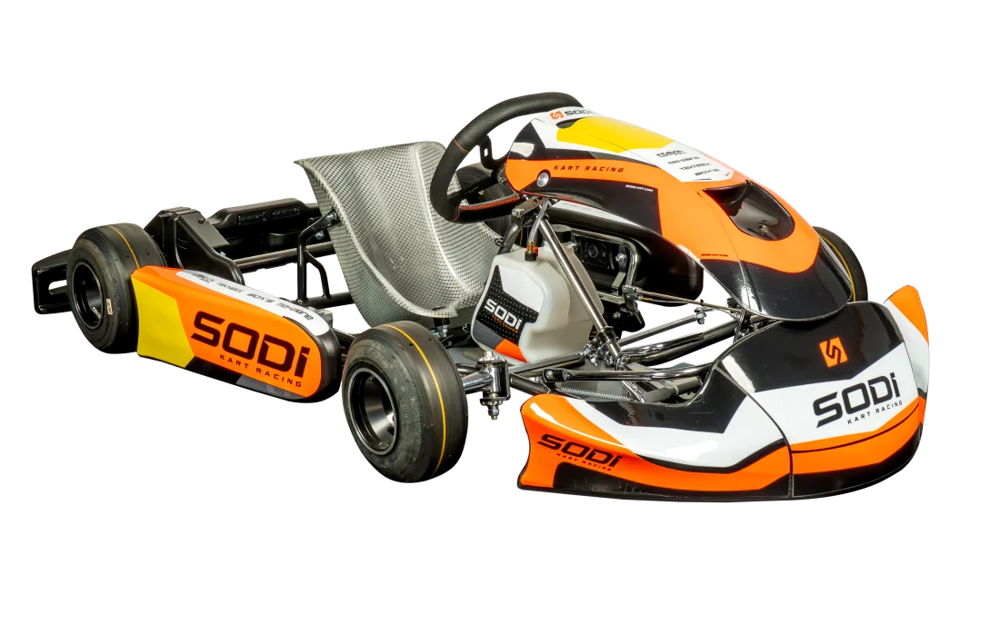
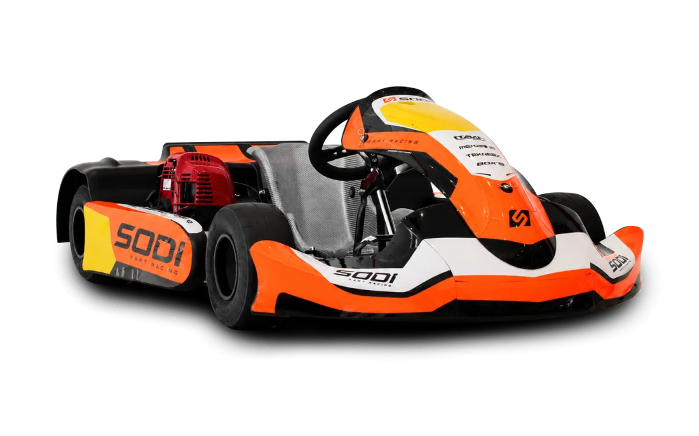
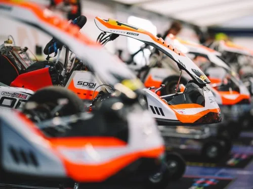
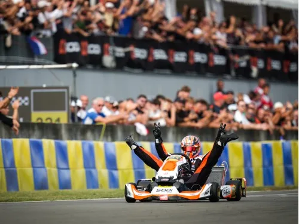
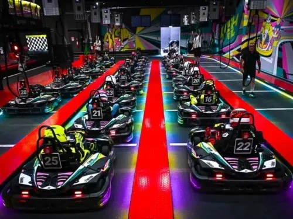

Le constructeur qui fait rouler le karting mondial.
De la première piste indoor au titre de champion du monde : Sodikart conçoit, fabrique à Saint-Herblain et fait vivre les karts de location et de compétition qui font rouler 150 000 pilotes sur 760 pistes dans plus de 70 pays.
Trois façons
de rouler SODI.
Exploitant, porteur de projet ou pilote : chaque parcours a son interlocuteur, ses preuves et un seul appel à l'action. Dites-nous qui vous êtes, on s'occupe du reste.

Le kart
qui rapporte.
Fiable, sûr, rentable, soutenu partout dans le monde en J+1.
- Moteurs Honda GX 4 temps, versions GPL, compteurs d'heures
- 10 000 pièces en stock, livrées en J+1
- Flotte neuve ou reconditionnée Sodi Restart

De l'idée
à l'ouverture.
Un seul interlocuteur, 15 étapes, des experts dans 46 pays.
- Étude de faisabilité, concept et tracé de piste
- Flotte, barrières, revêtements, chronométrage Apex Timing
- Formation des équipes et lancement sur les Sodi World Series

Le châssis
champion du monde.
Du baby-kart au KZ, cinq châssis homologués CIK-FIA.
- Sigma KZ : titres mondiaux FIA KZ 2024 et 2025
- Châssis officiel des Rotax Grand Finals depuis 2010
- Rotax France, TEKNEEX, BOX'S, Sodi Racing School
Une seule chaîne de valeur,
du châssis au classement mondial.
Chaque pilier nourrit les autres : un circuit équipé en karts SODI achète ses pièces chez ITAKAshop, est suivi par le service client et recrute ses pilotes via le classement SWS. Personne d'autre ne couvre toute la boucle.
Construire Secteur 1
Karts de location SODI, châssis SODI Racing, moteur électrique ENGEC, occasion reconditionnée Sodi Restart. Des brevets maison et des karts crash-testés UTAC, fabriqués à Saint-Herblain.
Distribuer Secteur 2
ITAKAshop, 1er site européen de vente en ligne de karts : 10 000 références en stock. Marques maison BOX'S, TEKNEEX, MEKAONE. Importateur exclusif Rotax en France depuis 1988, 84 points de vente dans 46 pays.
Accompagner Secteur 3
Projets clés en main en 15 étapes, service client J+1 dans le monde entier, Flying Doctors, formations et audits sur piste, plateformes My Sodi et Sodiconnect.
Animer Secteur 4
Sodi World Series, le plus grand classement de karting loisir au monde ; 3MK Events, NSK, Challenge Rotax France ; Sodi Racing Team, champion du monde KZ.
Un outil de production.
Conçu comme une voiture.
Bureau d'études intégré, méthodes issues de l'industrie automobile, 82 technologies documentées : chaque kart sort de l'usine avec sa fiche identitaire. Survolez le SR6, le kart nouvelle génération.
 Premier constructeur au monde à crash-tester ses karts
Premier constructeur au monde à crash-tester ses karts
ERGOMAX® : un seul kart pour tous vos clients
Siège et pédalier réglables en quelques secondes : un même SR6 accueille les pilotes de 1,40 m à 2,10 m. Plus de clients par piste, moins de karts immobilisés.
HEAD SYSTEM® : la protection arrière qui absorbe
Le système anti-chevauchement empêche un kart de monter sur un autre lors d'un contact. Conçu pour le choc, validé par les crash-tests UTAC, une première mondiale.
PROLINE® 360 : enveloppé, pas exposé
Protections périphériques et nez type F1 : le pilote est enveloppé, les barrières préservées, l'entretien réduit. Conforme NF EN 16230-1 et aux règles techniques FFSA.
EASY DRIVE® : précis au volant, sans effort
Une géométrie de direction qui réduit l'effort au volant tout en gardant le ressenti compétition. Accessible dès les premiers tours, exigeant au dernier.
Honda GX et EMS : des karts égaux, des clients fidèles
Moteurs Honda GX200, GX270 ou GX390 4 temps réputés fiables, versions GPL, compteurs d'heures. L'EMS garantit l'équité des karts : moins de réclamations, plus de reconduites.
R-Display & Game of Karts : un jeu vidéo de course, pour de vrai
Écran embarqué, bonus, classement en direct : l'expérience qui fait revenir. Configurateur My Studio : plus d'un million de combinaisons de couleurs pour une flotte à vos couleurs.
L'électrique,
maîtrisé depuis 2006.
Moteur ENGEC conçu en interne, premier kart électrique Sodi dès 2011, RSX2 aujourd'hui référence des circuits indoor : chez Sodikart, l'électrique n'est pas une option du catalogue, c'est vingt ans d'expertise.

Moteur synchrone issu de l'industrie automobile, batterie lithium, charge & verrouillage sécurisés, supervision de flotte SODISCAN. Une heure de piste par charge, un coût à l'heure maîtrisé.
Seize karts.
Une seule signature.
Onze karts de location réservés aux professionnels, cinq châssis de compétition homologués CIK-FIA. Du KidRacer de 3 ans au Sigma KZ champion du monde.







Comparez, configurez, chiffrez.
Jusqu'à 3 karts côte à côte, plus d'un million de combinaisons de couleurs avec My Studio, puis un devis pré-rempli.
ComparateurMy StudioFIA KZMonoposto, Italie
Champion
du monde
FIA KZ.
2024 avec Giuseppe Palomba, 2025 avec Senna Van Walstijn : deux titres mondiaux consécutifs en KZ, la catégorie reine. La compétition est la vitrine technologique de la location : ce qui gagne le dimanche équipe vos pistes le lundi.
- 2025Champion du monde FIA KZSenna Van Walstijn · Sigma KZ · Sodi Racing TeamTitre mondial
- 2025Coupe du monde FIA KZ2Maksim Orlov · Sigma KZCoupe du monde
- 2026Champion FIA Karting par équipes KZ2CPB Sport, deuxième titre consécutif, devant Tony KartÉquipes
- 2024Champion du monde FIA KZGiuseppe Palomba · Sigma KZTitre mondial
- 2010Châssis officiel des Rotax Max Challenge Grand FinalsChaque année depuis 2010 · ~400 pilotes de 60 pays · 74 Sigma RS3 livrés à Bahreïn en 2025Depuis 2010
Le kart ultime.
Développé par ceux qui gagnent.
Châssis KZ / KZ2 homologué CIK-FIA, moteurs TM KZ10 C ou KZ-R1, développé et validé en course par le Sodi Racing Team. Ligne complète du baby-kart Nova au Sigma KZ, pièces TEKNEEX, équipement BOX'S, moteurs Rotax France.
Le karting mondial
roule SODI.
84 points de vente dans 46 pays, 6 implantations propres, 760 pistes partenaires Sodi World Series dans plus de 70 pays. Du Mans à Bangkok, de la Floride à Melbourne : un industriel nantais devenu le standard mondial.
- Saint-Herblain, FranceSiège · usine
- SODI USA · FlorideAmériques
- Sodi Racing USA · FlorideRacing
- SODIKART LATAM · MexiqueAmériques
- SODI UKEurope
- SODIKART ASEAN · BangkokAsie
- Bureau de DubaïMoyen-Orient
- SODI AustralasiaOcéanie

Roulez, classez-vous,
qualifiez-vous.
Les Sodi World Series : le plus grand classement de karting loisir au monde, gratuit, ouvert dès 7 ans. 20 000 épreuves par an sur des karts SODI, 50 courses par jour, et 16 places qualificatives pour les Rotax Grand Finals. C'est le lien entre vos karts et vos clients : ils reviennent pour grimper au classement.
De l'idée à l'ouverture,
en 15 étapes.
Investisseur, franchisé, collectivité ou entrepreneur du loisir : un seul interlocuteur de la faisabilité à la première course. Surface dès 1 000 m², clientèle dès 8 ans, karts dès 3 ans.
Étudier
Valider le projet avant d'investir.
- Étude de faisabilité
- Business plan & financement
- Choix du site, dès 1 000 m²
Concevoir
Un circuit pensé pour la rotation et la sécurité.
- Concept & thématisation
- Tracé de piste
- Normes NF S52-002, EN 16230-1
Équiper
Tout le matériel, une seule livraison.
- Flotte SODI neuve ou Sodi Restart
- Barrières & revêtements
- Chronométrage Apex Timing
Lancer
Des équipes formées, des pilotes dès le premier jour.
- Formation des équipes
- EMS, SODISCAN, R-Display
- Ouverture & affiliation SWS
Exploiter
Rouler plus d'heures, dépenser moins.
- Service client J+1
- Pièces ITAKAshop
- Audits sur piste & Game of Karts
J+1,
partout dans le monde.
Un kart immobilisé est un kart qui ne rapporte pas. Experts par technologie, Flying Doctors, 10 000 pièces en stock et des plateformes pour piloter votre flotte : le service est inclus dans la promesse.
Intervention J+1
Les Flying Doctors interviennent dans le monde entier dès le lendemain. Direction service client avec plus de 20 ans d'expérience.
J+1 monde entierExperts par technologie
Trois pôles dédiés : thermique, électrique et gaming. Formations, audits sur piste et certification de vos équipes.
3 pôles expertsPièces & équipements
ITAKAshop, 1er site de vente en ligne de karts en Europe : 10 000 références, entrepôt de près de 10 000 m². BOX'S, TEKNEEX, MEKAONE.
10 000 référencesMy Sodi & Sodiconnect
Suivi de flotte, commandes de pièces, documentation technique, médiathèque et formation en ligne dans un espace client unique.
24/7 espace clientDernières nouvelles de la piste.

CPB Sport champion FIA Karting par équipes en KZ2
Deuxième titre consécutif pour le team partenaire sur châssis Sigma KZ, devant Tony Kart.
Lire
KZ2 Masters International Super Cup : Anthony Abbasse champion
Le pilote Sodi Racing Team s'impose au sommet de la catégorie Masters.
Lire
E-Finals SWS 2026 à Alcamo : 138 pilotes, 20 pays, 100 % électrique
La finale électrique des Sodi World Series confirme l'essor des RSX2 et LRX2 sur les pistes indoor.
LireParlons de
votre projet.
Trois questions, un expert dédié, une réponse sous 48 h ouvrées. Exploitant, porteur de projet, pilote ou revendeur : le bon interlocuteur, du premier appel.